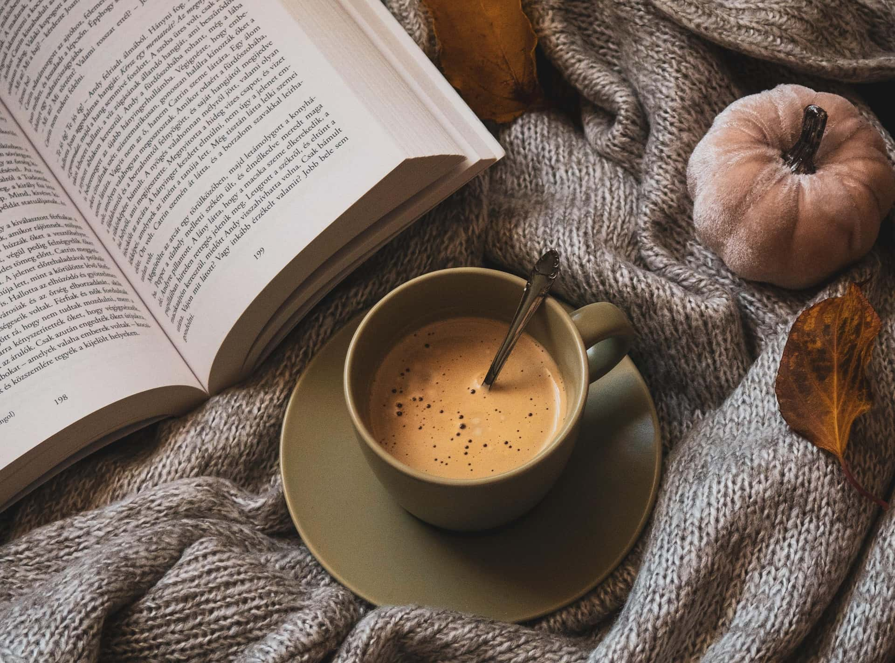

Neulo & juttele
Vapaamuotoinen ilta, jossa jokainen voi neuloa omaa työtään ja jutella muiden harrastajien kanssa.

Kahvila Silmukka avasi ovensa Testilän keskustassa vuonna 2019. Perustajamme oli pitkään haaveillut paikasta, jossa hyvä kahvi ja käsityöt kohtaavat: kahvilasta, jonne voi tulla neuletyön kanssa ilman erillistä syytä ja jossa saman pöydän ääressä istuvat niin kokeneet neulojat kuin ensimmäistä silmukkaansa opettelevatkin.
Haaveesta tuli totta, ja nykyään Silmukka on sekä lähiseudun kahvila että käsityöharrastajien kohtaamispaikka. Täällä voi nauttia aamukahvista, tavata ystäviä tai viettää rauhallisen iltapäivän puikot kädessä.
Leivomme pullat, kakut ja keksit omassa keittiössämme, ja kahvi jauhetaan joka aamu. Valikoimasta löytyy myös suolaista purtavaa sekä vaihtoehtoja erityisruokavalioille.
Neulominen ei ole meillä vain tapahtumailtojen ohjelmaa. Voit ottaa oman neuletyösi mukaan ja neuloa kahvilassa myös tavallisen aukioloaikamme aikana. Kahvilassa on tarjolla myös neuleohjeita ja -vinkkejä, jos tarvitset apua tai inspiraatiota.
Vapaamuotoinen ilta, jossa jokainen voi neuloa omaa työtään ja jutella muiden harrastajien kanssa.
Tekniikkaillassa opetellaan yhdessä uusi neuletekniikka tai syvennetään jo tuttua taitoa.
Joskus neulomisen rinnalle tulee myös muita käsitöitä, kuten kirjontaa, virkkausta tai kehräystä.
Tutustu tuleviin harrastusilltoihin ja ilmoittaudu mukaan! Paikkoja iltoihin on rajoitetusti.
Kahvikoneen surinaa, kuppien kilinää ja hiljaista puheensorinaa. Sulje silmät ja kuvittele itsesi nojatuoliin neuletyön kanssa.